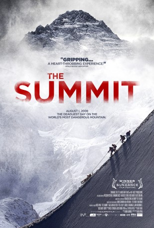

IMDB-Wertung: 6.9 / 10
IMDB-Wertung: 6.9 / 10  Metascore:
Metascore: 
The story of the deadliest day on the world's most dangerous mountain, when 11 climbers mysteriously perished on K2.
 IMDB-Wertung: 6.9 / 10 Metascore:
The story of the deadliest day on the world's most dangerous mountain, when 11 climbers mysteriously perished on K2.
Jahr: 2012
Dauer: 98 Minuten
FSK: 6
Land: Irland Studio: UFATonspuren:
Untertitel: Deutsch,
Auflösung: 720p (1280x720) Größe: 3174 MB
Genre: Abenteuer, Dokumentation
Regisseur: Nick Ryan
Drehbuch: Mark Monroe
Soundtrack: Nick Seymour
Darsteller:
Datei: X:\Dokumentationen\Natur\Summit - Gipfel des Todes, The (2012, FSK6, 1280x720).mkv seit 17.02.2019
Festplatte: HD Serien(SU-Z)+Dokus+Musik
 Es gibt insgesamt 35 Filme in der Gruppe 'Dokumentationen\Natur'
Es gibt insgesamt 35 Filme in der Gruppe 'Dokumentationen\Natur'